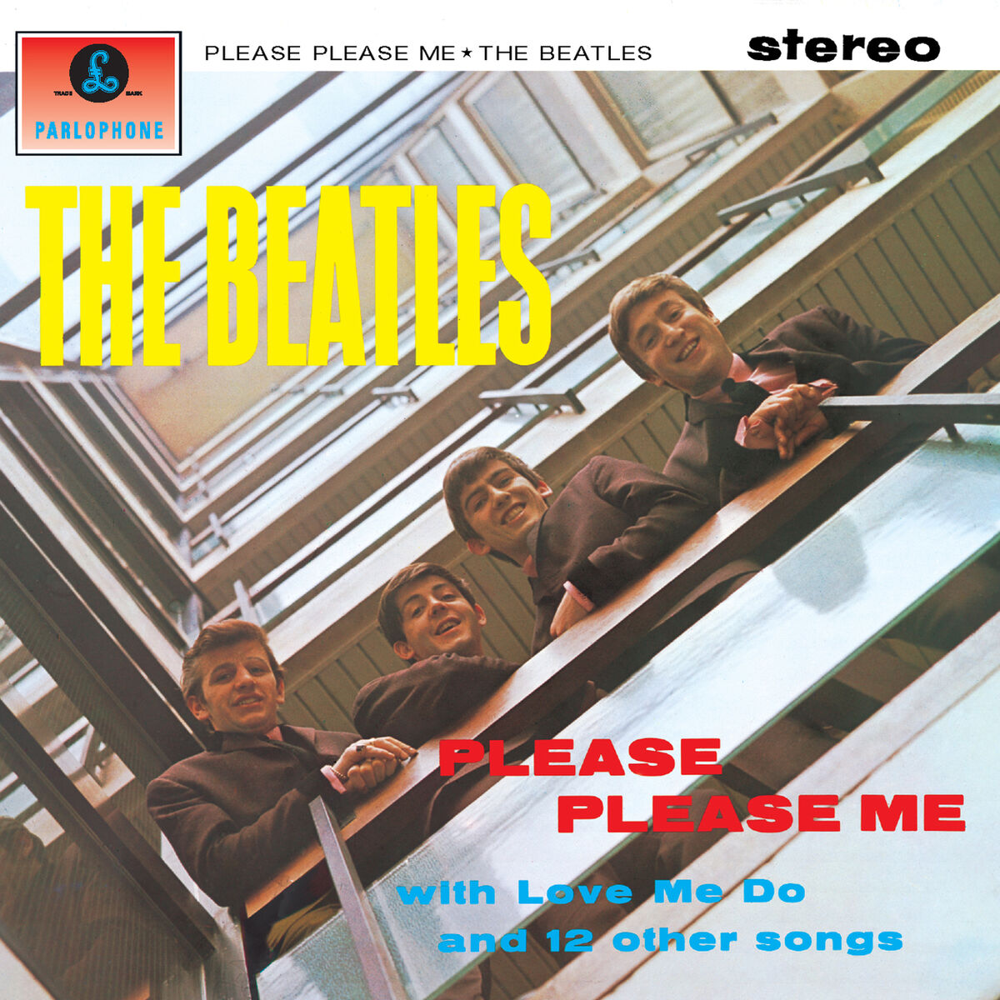
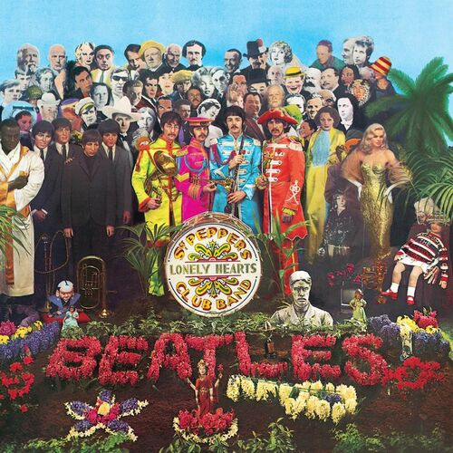
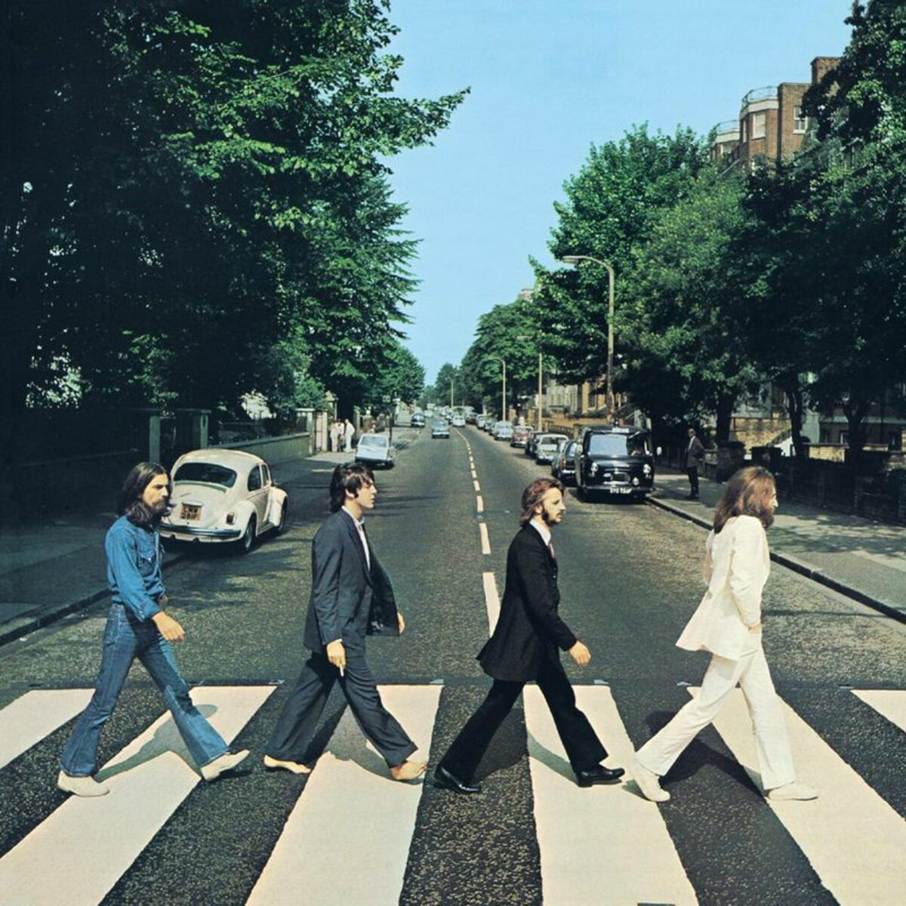

Álbumes
Please Please Me, el primer álbum de la banda, lanzado en 1963, si bien es una obra simple y de rock clasico, tiene componentes que demostrarian el enorme talento de la banda.
Revolver, es el álbum donde comenzarian a mostrar tintes experimentales, encontrandonos canciones que revolucionarian la música moderna, como es el caso de 'Tomorrow Never Knows', 'She Said She Said', entre otros.
Sgt. Peppers Lonely Hearts Club Band, para muchos, el mejor álbum de la historia y el mas incisivo a la hora de ingresar nuevos instrumentos y formas de componer a la historia de la industria musical. Al dia de hoy se siguen extrayendo elementos usados por primera vez en este álbum.
Abbey Road, último disco en ser grabado, pero el penúltimo en ser publicado, una obra excelente, con una conexión de canciones en el medio llamada "Abbey Road Medley", es mayormente conocido por su mítica portada de los 4 integrantes cruzando la famosa calle de Londres.
  